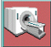
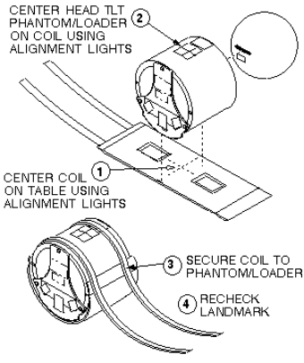

Proprietary to General Electric Company
Direction 5440000, Rev# 5
Signa HDxt Service Methods
Module Version 7.0, Version Date 9/9/10
Proprietary to General Electric Company |
| Required Persons | Preliminary Reqs | Procedure | Finalization |
|---|---|---|---|
| 1 | Not Applicable | 20 mins | Not Applicable |
| Last Update | February 23,2006 |
| Item | Qty | Effectivity | Part# | Manufacturer | |
|---|---|---|---|---|---|
| Universal Phantom Holder | 1 | - | 46-328383P1 | - | |
| 100mm Sphere Phantom (filled with NiCl2 solution) | 1 | 1.5T | 46-317586G1 | - | |
| TLT Head Sphere Phantom (filled with NiCl2 solution) | 1 | - | 46-265826G6 (for Flex Coil) | - | |
| Head Loader | 1 | - | 46-287899G1 (for Flex Coil) | - | |
| ||||
| POISON HAZARD! | ||||
| THE PHANTOM CONTAINS NICKEL CHLORIDE, A SUSPECTED CARCINOGEN | ||||
| DO NOT INGEST. DISPOSE OF AS A HAZARDOUS WASTE ACCORDING TO STATE AND FEDERAL REGULATIONS. |
| Condition | Reference | Effectivity |
|---|---|---|
No image artifacts | - | - |
- | - |
At the operator workspace, select the 
If necessary, exit out of any previous exams by selecting [End Exam].
Click on [New Pt ]and enter the following:
Id: geservice
Name: snr check
Weight (lb.): 111
| NOTE: | Possible equipment damage. Completely remove the Quad Head Coil from the cradle before performing any body scans. Failure to do so may damage the Head Coil T/R Network. |
Remove the Quad Head Coil (if present) from the cradle.
Place the surface coil to be tested on the table.
Connect the coil connector to its mating connector in the Carriage Assembly.
For Coils using the Universal Phantom:
Position the Universal Phantom Holder on the coil. Refer to Illustration 1 for specific details for each coil type.
| NOTE: | The General Purpose (GP) Flex Coil uses the Head Coil TLT phantom and loader for its phantom (not the Universal Phantom). Refer to Step for General Purpose (GP) Flex Coil setup details. |
Illustration 1: UNIVERSAL PHANTOM HOLDER SETUP

Place the 100-mm phantom in the phantom receptacle, LANDMARK, and MOVE TO SCAN. See Illustration 2.
Illustration 2: LANDMARKING UNIVERSAL PHANTOM

GP Flex Coil Setup: Set up Flex Coil per Illustration 3. LANDMARK, and MOVE TO SCAN.
Illustration 3: GP FLEX COIL PHANTOM SETUP

At the operator workspace, set Patient Protocols to Service.
Select the scan protocol by clicking on Other, select the SNR Check protocol and series 7 from the menu. For TwinSpeed, set the GradMode to the desired selection.
Click [Accept] to load the SNR Check (Surface Coils) protocol.
Click on [Autoview], just below the Autoview image display screen, to automatically display your images.
Click on [Save Series], then [Prepare to Scan].
Click on [Auto Prescan] to properly calibrate the RF power level for the 90-degree and 180-degree pulses.
Click on [Scan]. Record the Exam number and Series number for SNR Calculations. After the first scan is complete, click on [Scan] again (two back-to-back scans).
For analysis, see Section Image Analysis.
Return to the Signal to Noise Check main menu.
No finalization steps.